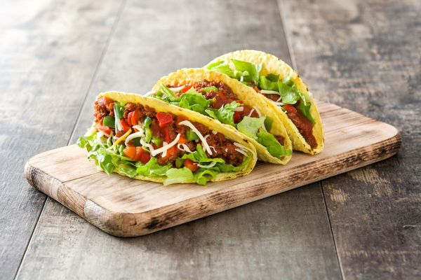

Back to Home
Tacos

Description
Tacos are a beloved Mexican dish featuring a variety of fillings inside a soft or crunchy tortilla.
Ingredients
- Tortillas
- Ground beef or chicken
- Cheese
- Lettuce
- Tomato
- Onion
- Salsa
- Seasonings
Steps
- Cook meat with seasonings.
- Chop vegetables and prepare toppings.
- Warm tortillas in a pan.
- Assemble tacos with meat and toppings.
- Serve with salsa.